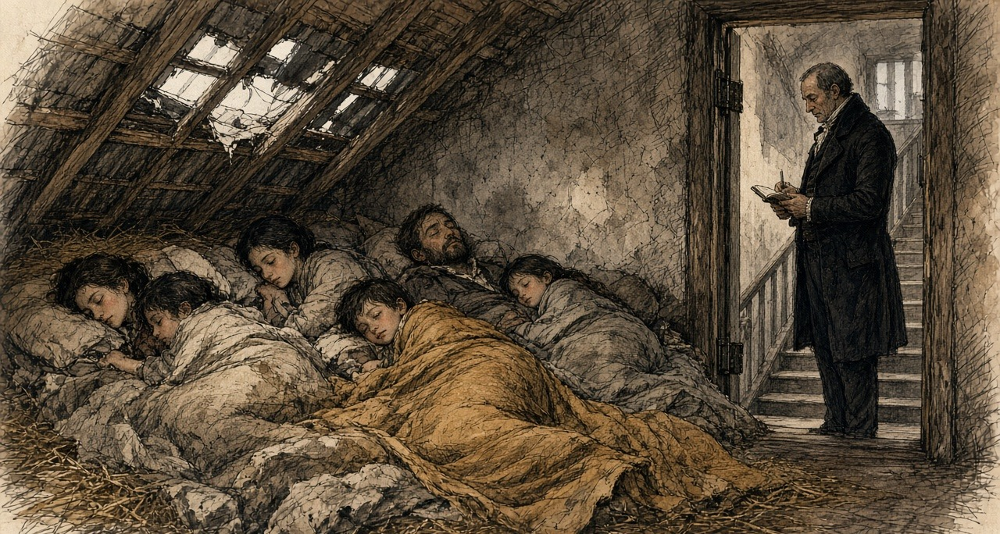
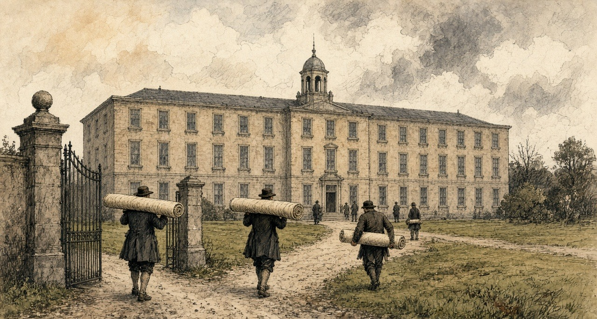
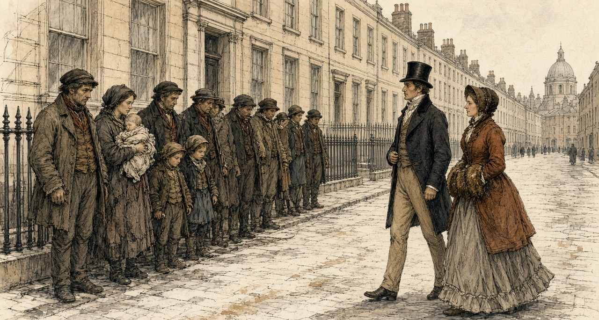
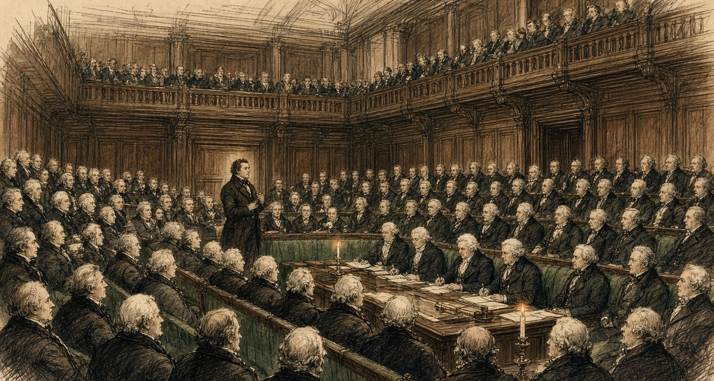
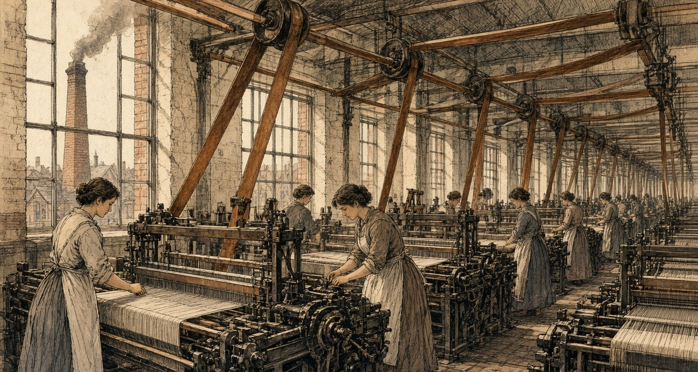
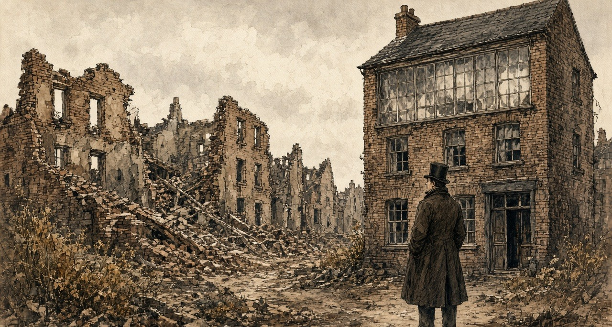

Chapter 6
Dublin Weavers, 1801–1824
The Liberty of Dublin, Westminster, and Lancashire, 1798 to 1838
A room in the Liberty of Dublin cost a shilling a week, or two. James Whitelaw, vicar of St Catharine's, who counted the city house by house in 1798, gave the price before he described anything else. "A single apartment, in one of these truly wretched habitations, rates from one to two shillings per week; and, to lighten this rent, two, three, and even four families, become joint tenants."
The people who paid it were, in his list, "working manufacturers, by petty shop-keepers, the labouring poor, and beggars, crowded together, to a degree distressing to humanity." The working manufacturers were the weavers and the trades around the loom: the winders, warpers, dyers and throwsters of a district that made silk, wool and cotton cloth. Their streets had been built for richer people. The Coombe, Pimlico, Spitalfields and the Weaver's Square, the city's historians wrote in 1818, were laid out after 1688 for English clothiers who came over with their capital, and the district was "the residence of all that was opulent and respectable in the city." Then the woollen trade was shut out of foreign markets by law in 1699, and "many wealthy employers immediately left the country, and brought their capitals and assistants with them." The houses stayed. The money went.
* * *
Plunket-street, Braithwaite-street and Joseph's-lane, summer 1798
Whitelaw went out early. "As I was usually out at very early hours on the survey, I have frequently surprized from ten to sixteen persons, of all ages and sexes, in a room, not fifteen feet square, stretched on a wad of filthy straw, swarming with vermin, and without any covering, save the wretched rags that constituted their wearing apparel."
He counted. Plunket-street held 1,804 people in 92 houses. Weaver's-square held 261 in 19. Cork-street held 1,620 in 126. On one stretch of Plunket-street "thirty-two contiguous houses contained 917 souls, which gives an average of 28.7 to a house; and the entire Liberty averages from about twelve to sixteen persons to each house." A priest told him that No. 6 Braithwaite-street had once held one hundred and eight souls. In 1797 it held 97. On the day of the survey, 56.
In the back-yards, often not ten feet deep, the waste of every room was thrown from the windows, and he had "seen it nearly on a level with the windows of the first floor." Near Castle-market, in Joseph's-lane, in the summer of 1798, he found a house where a slaughter-yard had burst the back door and filled the hall, and where the rain came "through every floor, from the garret to the ground." In the garret he found "the entire family of a poor working shoemaker, seven in number, lying in a fever." Their room had no door. The landlord, "finding him not able to pay the week's rent, in consequence of his sickness, had, the preceding Saturday, taken it away."
Whitelaw counted thirty-seven people in that house. He worked out what it paid. Its owner drew "a profit rent of above 30l. per annum, which he exacted, every Saturday night, with unfeeling severity." The owners of these houses, he wrote, were generally men who "lived in affluence, in, perhaps, a distant part of the city," and who never troubled their tenants "except to collect his rents, generally weekly; in which, indeed, he betrayed no remissness whatever."
When he told the tenants to clear the yards, they gave him one answer, and he wrote it down: "It is not my business; if I remove it, who will pay me?"
Whitelaw could be hard on the poor in print. The question he recorded was a fair one. In the Liberty everything was paid for by the week, in shillings, and a family that lost a week's work lost its door.

* * *
Dublin and Westminster, 1800
The Union of Great Britain and Ireland took effect on 1 January 1801. Its sixth article dealt with trade, and the money in it was set out in a schedule.
Most goods were to pass between the two islands free. A list of manufactures was not. "For the period of Twenty years from the Union," the article ran, "the articles enumerated in the Schedule Number Two, hereunto annexed, shall be subject on importation into each country from the other to the duties specified in the said Schedule Number Two." The schedule set the duty at "Ten Pounds per Cent. on the true Value," and named what it covered: apparel, wrought brass, cabinet ware, coaches, wrought copper, cottons other than calicoes and muslins, glass, haberdashery, hats, hardware, gold and silver lace and thread, millinery, stained paper, pottery, saddlery and leather, stockings, and "Silk Manufacture."
Woollens were handled apart. "The woollen manufactures, known by the names of Old and New Drapery, shall pay, on importation into each country from the other, the duties now payable on importation into Ireland." Calicoes and muslins kept their old Irish duties until 1808, and then "the said duties shall be annually reduced, by equal proportions as near as may be in each year, so as that the said duties shall stand at Ten per centum from and after the Fifth day of January One thousand Eight hundred and Sixteen, until the Fifth day of January One thousand Eight hundred and Twenty-one." On cotton yarn and twist, "all duties shall cease on the said articles from and after the Fifth day of January One thousand Eight hundred and Sixteen."
So the Union did not set one ten per cent duty on manufactured goods. It set ten per cent on a list, kept the old duties on woollens, stepped calicoes and muslins down to ten per cent by 1816, and took the duty off spun cotton altogether in 1816. Each date was a date on which an English price would come nearer to a Dublin one.
The seventh article dealt with the other side of the account. Each kingdom kept its own debt. "For the Space of Twenty Years after the Union shall take place, the Contribution of Great Britain and Ireland respectively, towards the Expenditure of the United Kingdom in each Year, shall be defrayed in the Proportion of Fifteen Parts for Great Britain and Two Parts for Ireland." Two parts in seventeen of the joint expenditure would be raised in Ireland, and the Parliament that voted it would sit in London.
* * *
Dublin, Kildare and Ulster, 1801 to 1816
Cotton went first. In 1802 the inspectors of yarn reported to the Linen Board 20,500 looms in Ireland "engaged solely in the manufacture of cotton," 3,500 of them in the counties of Dublin and Kildare. "Since that period," the historians of Dublin wrote in 1818, "the business in Ireland has rapidly declined." When the enemy shut British goods out of the Continent and America laid its embargo, English cotton goods that could find no buyer abroad came across the Irish Sea, "against which a small duty of 10 per cent. on heavy goods, and 2d. per lb. on spun cotton, afforded a feeble protection. Some of the most respectable manufacturers withdrew their capital from the business, and others failed altogether."
By 1816 there were "not more than 300 looms in the cotton manufacture in the metropolis, and of these 100 only are in the employ of masters." The rest had done something new. With small sums from a loan fund known as the Meath loan, a number of poor weavers had bought their own yarn, woven it, and sold the cloth themselves, so that "the profit of an intermediate person is saved." They kept a depot and a market in the Liberty, where country shopkeepers came to buy, and "above 200 working manufacturers are concerned in it." Their masters' capital had gone. They had put in their own.
Wool went in a crash. Weavers who gave evidence years later remembered it by a name. "In 1810 Mr. Hoskins," they said, failed, "which caused such an effect as to stop 22 employers." The commissioner who took their evidence wrote that the failure "was followed by the bankruptcy of almost the entire woollen trade of Dublin," and that "the banks throughout the country refused to discount their bills."
New money came in behind it. William Willans and his partners built the Hibernian Mills at Kilmainham in 1811. They did it, he said, because of "the high duties on many articles of English manufacture, which we, in common with others, then imported for sale. On some goods these duties were so high as 25 per cent." The duty made it worth building in Dublin. It did not make it cheap. The buildings cost more than in England, the machinery cost more to bring in and keep, and there was "the high price of coal." Willans brought his overlookers and his best workmen from England, at better wages than they could get in Yorkshire.
Coal was the cost that would not come down. Sir John Newport told the Commons in 1821 that pottery had never been made in Ireland and never could be, "because coal could not be had but at a heavy price."
* * *
The Weaver's Square, the wet season, before 1815
The warp is sized since tuesday, and hanging out on the tenters in the open air yet. Not a dry thread in it. Days it hangs there, and weeks, dripping into the nettles, and wool that has the wet it cannot go onto the beam.
When the loom stands idle, the winder is idle, and the warper, and the draw-boy besides. Eight of us live off the one frame, near enough, in the broad woollen. Let the sky hold clear and you will have five hundred and fifty looms clacking across the liberty. Let the rain set off in the bay and the whole trade waits on the clouds.
We drew up our petition to the Dublin Society, and to the Farming Society after, praying them to build a stove-house where a man could dry his chain by fire in the bad months. We wrote it out plain what a wet winter does to the trade: it sends one part of us out begging in the streets, another part to the debtors' marshal, and the third to the fever hospital. That was no lie. The gentlemen read the paper and laid it on the table. Then there was talk of a joint-stock company putting one up on debentures, for the dividend. No dividend came of it, so no brick was laid.
When the beam stops, you till the irons so the damp won't rust them, and you walk down past Thomas street into the flagged streets where the quality shops are, and you hold out your hat.
* * *
Brown-street, at the rere of the Weaver's Square, 1815
The weavers' own words are in the History of 1818. Their petitions, it says, described the wet seasons as calamities "which often sent, as their petition truly states, 'one portion of them to the streets, another to the jails, and a third to the hospitals.'" The same historians put a number on the waiting. In an ordinary year 550 woollen looms were at work in the district, each giving work to eight people, and with five in a family depending on each worker, "it will follow that 22,000 individuals are deprived of the means of support, as long as the weather continues unfavourable."
The house the societies would not build was built in 1815 by one man, Mr. Pleasants, "at his own expense, and without hope of remuneration." He did, the historians wrote, "what neither petitions or debentures could accomplish." It stood in Brown-street, behind the Weaver's Square, three stories high, "with the weavers' arms emblazoned in the front, and the centre surmounted with a cupola and spire." On the ground floor were four furnaces. Metal tubes ran from them to either end of the building, and every floor was made of iron bars "through which the heat permeates." The cloth was stretched on tenters worked by machinery across the heated floors. The warps were dried on the top floor, farthest from the stoves.

It cost £12,964 12s. 10d. The weaver paid only what covered the coals and the running costs: "2s. 6d. for every piece of cloth, and 5d. for every chain of warp. In winter it is always filled."
It was a coal fire under a weaving district, and it came as a gift. Nobody had found it worth building for profit.
* * *
The Liberty and the Weavers' Hall, 1809 to December 1816
Silk was the Liberty's own trade. It "never extended to any other part of Ireland." It was "generally supposed to have been introduced by the French refugees," and it lived on silk bought in London. "The silks imported are not brought direct from Italy, but purchased in London of the agents of the Italian houses, and the raw silks are bought at the sales at the East India House."
The war cut that line. A committee of silk weavers set down their history in their own words for the hand-loom commission in 1838. In 1805, they said, came "the last rise in wages." In 1809 "they suffered much by the Berlin decrees, which had the effect of raising the price of raw silk to an enormous height, so as to prevent the manufacturer from purchasing it." The weavers "were thrown out of employment and enlisted."
The Union's terms still gave Dublin something. The Irish silk manufacturer paid "a less duty on organized silk than the London merchant." The historians of 1818 knew how long it would last: "as that was one of the commercial regulations made at the Union, it will cease in 1821, when the duties will be equalized." They thought "the trade, in all probability, will be totally annihilated." Even with the advantage, "there is about as much English silk goods at present imported, as are manufactured at home."
1816 was a year of general distress. "The general distress, and failure of markets which have arrived at the lowest depression this year (1816), have completed the ruin of the silk manufacture in Dublin, and thrown out of employment and left destitute almost all those who were maintained and subsisted by it." The woollen survey made for the relief of the poor found "170 looms only were employed out of 700, which once were kept in motion in this district."
In December 1816 the manufacturers met at the Weavers' Hall on the Coombe and drew up a report. The silk goods imported and worn in Ireland, they reckoned, would employ 1,600 looms, "while 500 were idle in the Liberties." They pointed to the civil list laid before Parliament in 1815, which showed £143,000 paid to silk mercers for silks for Carlton House, the Prince Regent's palace in London, while the Irish silk trade for the same time "did not receive £20." They did not ask for alms. "We ask not for charity for our starving manufacturers," the report said, "but to give them employment by using the work of their hands."
When the looms stopped, the people of the Liberty came down into the city. A visitor, the historians wrote, would find himself "surrounded by groups of strange figures, remarkably different from those to which his eye has been accustomed. Their greasy and squalid dress, and pallid faces strikingly distinguish them, and a certain cast of countenance on which sickness and famine stamp a ghastly expression, often excites surprise and alarm." Then they added: "It is much to the credit of the poor people that the alarm is unfounded. Their distresses often render them importunate, but they never behave with incivility, much less with outrage."

* * *
The House of Commons, 14 June 1820 to 3 April 1821
The twenty years were nearly up. In 1820 the Chancellor of the Exchequer brought in a bill to continue the Union duties, and on 14 June Sir Henry Parnell moved for a committee to examine them first.
Parnell argued from the buyer's side. The duties, he said, took "out of the pockets of the Irish consumer of English goods 200,000l. a year." They shut the Irish maker out of England. "It was utterly impossible that much capital could be invested under these circumstances in Ireland in manufactures." He held that the Union had meant them to end: "The Irish parliament, when they passed the Act of Union, understood these duties were to cease in twenty years, and prepared their plans accordingly." The Chancellor's bill, he said, "proposed an indiscriminate renewal of ten per cent on seventeen great branches of manufacture, and to allow twenty years more for the gradual extinction of the duties."
Mr. Vesey Fitzgerald opposed the motion. "The state of Ireland at the present moment was so deplorable, that any attempt to agitate this question would produce a feeling of a most distressing nature throughout the whole country." The Chancellor said the duties "must cease some time or other," but not without notice, or without "causing great injury." Mr. Shaw said that the manufacturers, at least in Dublin, did feel "great anxiety that the protecting duties should be continued." Castlereagh warned of alarm "when commercial credit was so deeply shaken." Irish banks had been failing that summer. The committee was refused by 66 votes to 30.

On 7 July, in committee on the bill, Parnell named the items one by one. The duty on wrought brass was "nothing more or less than a tax of ten per cent upon British machinery going into Ireland." The duty on apparel was "rather a subject of ridicule," since he had never heard of any going into Ireland "unless of old clothes from Liverpool and Bristol." Only "cottons, calicoes, silk, and glass" needed protection, he said, and he moved to end the remaining duties in 1830 rather than 1840. The words stood. The bill passed with 1840 in it.
In 1821 the petitions came the other way, from Keswick in February and from the merchants and traders of Liverpool in April, English towns that wanted Ireland open. Mr. Hutchinson said that if the duties went "it would throw a great number of persons out of bread." Peel called them "merely a tax upon her commercial industry." In April the Chancellor told the House he had heard from the Dublin chamber of commerce that "it would be more agreeable" to put the matter off for that session. He promised to bring it forward again "at as early a period as possible."
* * *
The Chancellor's office, before the repeal
Barrett Wadden made silk in Dublin for fourteen years and then moved to Spitalfields. In June 1832 he told a committee of the Commons what he had gone to London to say, when the government was making up its mind.
He started with the ten per cent. Dublin's mercers and milliners, he said, crossed to London "three, four and in some instances, I believe, six times a year, in search of British goods and London fashions," and the Dublin makers copied what they brought back. However fine the work, "it had no sale in our market unless it was stamped with British origin." So "we were constantly a season behind-hand, London taking the lead," and they needed the ten per cent to stay in business at all.
When he learned that the duties were to be repealed, he went with a deputation to the Chancellor of the Irish Exchequer, with Sir Henry Parnell present. They said the Dublin silk trade would be destroyed. Wadden said he would never forget the answer. "You are wrong; the repeal of those duties will be to you a source of very considerable employment; for while there is a duty of 10 per cent. on British manufactures coming to Ireland, and a duty of 10 per cent. on your Irish poplins or tabinets going to England, so long you will be shut out from that market; but take away those duties, and for every ten weavers that you now employ in the production of Irish poplins or tabinets, you will in my judgment," the Chancellor told him, "be enabled to give employment a hundred fold."
"We begged leave to differ from him," Wadden said; "however it was no great importance; they had it all their own way; the duties were repealed; and I have lived to see some of my best, my oldest and my most valued friends sent to prison, their families scattered East, West, North and South."
* * *
Lancashire and the West of Scotland, 1813 to 1833
What was coming across the water was being made a new way.
The power loom, Edward Baines wrote in his history of the cotton trade, "came very slowly into favour. In 1813, there were not more than one hundred of the latter machines" for dressing the warp, "and 2400 of the former in use." Hand-loom weavers broke some of them. They kept coming. On figures given in the Commons in 1830, there were 12,150 power looms in England and 2,000 in Scotland in 1820, and 45,500 and 10,000 in 1829. "In England the great increase took place during the years of speculation, 1824 and 1825." They ran on steam and water. By 1833, Baines reckoned, the cotton factories of Britain were moved by 33,000 horse-power of steam and 11,000 of water. The steam was raised from coal, the fuel Newport said Ireland could get only at a heavy price.

Willans, who employed hand-loom weavers and expected the power loom to follow him to Dublin, put the difference in money. "A web will take 16 to 18 days to weave by hand, at a cost of 33s. to 36s. A similar web will be done by a power-loom in six days, perhaps five days, at 8s. or 10s. expense for labour."
No power looms wove silk in Dublin. They did not have to. A tabinet weaver named Becket told the commission in 1838 that the power loom, "though not used in weaving silks in Dublin, yet caused an increase of hands at the silk weaving, and was one of the causes of the withdrawal of the trade in whole silks from Dublin." A ribbon weaver named Flood, as the commissioner set down his evidence, put the decline down to power looms, and said that "ribbons are now made by steam so cheap, that to make them at the same price by hand would not be worth any one's while; he could not live by it."
* * *
Westminster, Dublin Castle, and the Liberty, 1823 to 1824
In his budget statement of 2 July 1823 the Chancellor of the Exchequer counted the repeal of the Union duties among the year's reductions. "It could not be denied that the repeal of those duties would be prejudicial to the interests of some persons, but it would enable the people of Ireland to obtain some articles of British produce 10 per cent below the price which they at present paid for them." The cotton duties went first. In May 1824 Parnell told the Commons that the duties on woollens and silks had been repealed "in the course of this session."
In the same session Parliament took away the law that had fixed silk weavers' wages. In London magistrates had set them. In Dublin the power belonged to the Dublin Society. Lord Lauderdale, speaking for the repeal in the Lords on 14 May 1824, described that body as "a mixed company of ladies and gentlemen, who met as a board of trade, to settle the rate of wages." He said that fixed wages hurt the weaver they were meant to protect, because when trade was slack the master "could not afford to pay the fixed price; he, therefore, withdrew his capital, and the journeyman was thrown out of employment."
The silk weavers of Dublin wrote to Dublin Castle against the repeal of their protection. The Castle's register records their letter, and the cause they gave for the trade's decline: "The Union and its fatal consequences to Ireland, the want of a Resident Nobility and Gentry on whose patronage the prosperity of the silk trade principally depended." With it went a certificate from the magistrates of the police office in James's Street to the "good order and regularity" of the silk weavers of the city.
In 1824 the trade was busy. Jonathan Sisson, who imported raw and thrown silk into Dublin and sat on the city's Common Council for the Corporation of Weavers, counted the looms that year and brought the figures to London: "1,200 broad silk looms of different kinds, and there were 996 ribbon machines." About ten silk mills were throwing in the city. "The trade was rapidly increasing in 1824," he said, and besides the mills at work "a great number of silk mills were erected that have never come into use."
On 11 May 1824 Parnell told the Commons where the money was going now. "Since the Union duties have been repealed on cotton goods, very large quantities of cotton yarn have been sent from Manchester and Glasgow to Ireland to be wove into cloth, and in that shape returned to the owners of the yarn. In this way a considerable English capital provided employment for a number of Irish weavers." He expected the same in silk and worsted, which would be "sent to Ireland to be wove, and returned to England." Irish shopkeepers were getting English goods from Liverpool on credit long enough to sell them before the bills came due, and "English capitalists have opened large wholesale and retail commission houses in Dublin and other large towns in Ireland, for the sale of all descriptions of English goods."
He meant it as good news. In his account the yarn belonged to Manchester and Glasgow before the weaving and the cloth belonged to them after it. What stayed in Dublin was the weaver's wage.
* * *
The Liberty, November 1825 to the summer of 1826
They took the duty off the thrown silk in November by an order out of the Treasury, without a week's warning to the trade. Seven and sixpence the pound weight it stood at, and down to five shillings on the stroke of a pen. Any master in the Coombe who had silk lying in his cellar at the old duty was broke before he threw a shuttle.
Then came word of the English banks smashing, and on the heels of it came the steamers into the river, loaded to the hatches. Whole silks and velvets from the Macclesfield and Spitalfields houses that had to turn their stock into ready cash or go under, knocked down in the Dublin auction rooms for less than the price of the raw organzine. Our masters locked their counting-houses and gave out no more cane.
We went down to the meeting with the Lord Mayor in the chair, the whole trade of us, and we voted of our own free will to knock fifteen shillings in the hundred off the price of weaving. While the Dublin Society had the fixing of the wages, we stood by the book. When the law went, we cut our own bread to keep the looms going in the city. It never brought back a yard of work.
They got up a charity subscription at the Exchange, and put sixteen hundred men breaking stones on the roads. A silk weaver's hands on a stone-hammer—two days of it and a man could never tie a broken thread again. Then the spotted fever got into the tenements in Skinner's Alley, and the Castle had to pitch tents in the fields to hold the raving. Half the young lads took the boat for Manchester to weave at starvation rates. The old men you see at the bridge, selling the penny papers or sweeping the horse-mucus off the crossing—those are whole-silk men.
* * *
The Liberty, 1826, and a committee room at Westminster, 1832
Sisson said the silk weavers, "fearful of the importation of French silks, broke through all these former arrangements, and at a public meeting, where the Lord Mayor presided, of their own accord, agreed to reduce 15 per cent. on the prices then existing." Later cuts took weaving prices down a further 30 to 40 per cent, "about the same as Macclesfield and Manchester."
Of 1826 he said: "it was indeed an awful thing to go through the Liberties of Dublin." A subscription was raised at a meeting called by requisition to the Lord Mayor. The people were "huddled together as they were, without any thing to support them." Fever followed, "and Government was obliged at the end of that year to erect hospitals even in the fields to receive these people." "What became of them it is difficult to say," he told the committee; "great numbers fell a sacrifice to a premature death." He had seen others "as news vendors and sweeping the streets."
By 1832, of all the broad, narrow and ribbon looms he had counted in 1824, "there were only 150." Of the ten silk mills, about two were left. A mill that cost something like £2,000 "was sold in the year 1829 for under 50l." Machinery that cost about £4,000 "was sold for 62l." In Fordham's Alley and Skinner's Alley, where the silk trade had lived, "most of the houses are down or falling." A man who owned property in the Liberty went up lately to look for it, and "he could find no vestige of houses whatever."
The houses Whitelaw had counted in 1798, at a shilling or two a room, had paid their owners every Saturday night. Now there was nobody in them to pay.

* * *
Dublin, May 1838
In 1838 the hand-loom commission sent an assistant commissioner, C. G. Otway, to Ireland. He was not sympathetic to the weavers' case. He blamed the protecting duties, the old wage rules and the weavers' combinations, and he quoted masters who said the same. He also found 400 silk weavers left in the city, most of them on poplins, the one Dublin fabric that still sold. Of the old trade in whole silks he wrote, "There can be no doubt that the trade in weaving whole silk is extinct." He thought the silk weavers "the best educated class of weavers I have met," and recorded that he had received no evidence of embezzlement against them, "although the temptation to this crime, from the value and portability of the raw material committed to their charge, is, I need not state, one to which they are peculiarly liable."
The woollen weavers told him there were not more than 300 looms at work in Dublin and around it, and gave him their own word for the weeks without work. "When we are waiting for work, it is called walking as we have nothing to do but walk, spinning street-yarn, wearing out our shoes."
The duties of the Union had been a wall, mostly of ten per cent, around a trade that needed coal, credit and silk from across the water to live. When the wall came down the coal stayed dear, the credit was English, and the cloth came in by steam.
Important names
- Parnell, Charles Stewart (6 mentions in this chapter): Leader of the Irish Parliamentary Party and president of the Irish National Land League.
- Parnell, Henry (6 mentions in this chapter): Irish MP and financial reformer who advocated the repeal of the 1800 Union protective duties.
- Peel, Robert (1 mentions in this chapter): British Chief Secretary for Ireland and Prime Minister who repealed the Corn Laws during the Great Famine in 1846.
Sources
- An Act for the Union of Great Britain and Ireland, 39 & 40 Geo. III c. 67 (1800), original print, Articles Sixth and Seventh and Schedule Number Two ("Ten Pounds per Cent. on the true Value"; the list of manufactures; Old and New Drapery; calicoes and muslins; cotton yarn and twist; the fifteen and two parts).
- Whitelaw, James. An Essay on the Population of Dublin. Being the Result of an Actual Survey Taken in 1798. Dublin, 1805. For the rent of a room, the joint tenancies, the early-morning rooms, the street and house counts for Plunket-street, Weaver's-square, Cork-street and Braithwaite-street, the back-yards, the house in Joseph's-lane and the shoemaker's door, the profit rent, the landlords, and "who will pay me?"
- Warburton, J., J. Whitelaw and R. Walsh. History of the City of Dublin. 2 vols. London, 1818. Vol. 2, the chapters on the cotton, silk and woollen manufactures and the Tenter House: the building of the Liberties after 1688 and the departure of capital after 1699; the cotton looms of 1802, the "feeble protection," the 300 looms of 1816 and the Meath loan weavers; the silk trade's dependence on London, the organzine duty to cease in 1821, the distress of 1816, the Weavers' Hall report of December 1816 and the Carlton House silks; the 170 woollen looms out of 700; the weavers' petitions, the 550 looms and 22,000 dependants, Mr. Pleasants's Tenter House in Brown-street, its furnaces, cost and charges; the people of the Liberties in the streets.
- Hansard, House of Commons Debates. HC Deb 14 June 1820, vol. 1, cc. 1066-72 (Parnell's motion on the Irish ten per cent Union duties; Fitzgerald, the Chancellor of the Exchequer, Shaw, Castlereagh; the division); HC Deb 7 July 1820, vol. 2, cc. 300-3 (the Union Duties Bill in committee; Parnell on brass, apparel, and 1830 against 1840); HC Deb 16 February 1821, vol. 4, cc. 720-3 (the Keswick petition; Hutchinson, Newport on coal, Peel, the Chancellor); HC Deb 3 April 1821, vol. 5, cc. 5-6 (Canning's Liverpool petition and the Dublin chamber of commerce); HC Deb 2 July 1823, vol. 9, cc. 1412-22 (the budget and the repeal of the Union duties); HC Deb 11 May 1824, vol. 11, cc. 654-723 (Parnell on the state of Ireland, the yarn from Manchester and Glasgow, and the commission houses).
- Hansard, House of Lords Debates. HL Deb 14 May 1824, vol. 11, cc. 750-3 (Lauderdale on the Silk Manufacture Bill and the Dublin Society).
- Report from the Select Committee on the Silk Trade, with the Minutes of Evidence. House of Commons, ordered to be printed 2 August 1832. Evidence of Barrett Wadden (the Dublin trade and London fashion, the deputation to the Chancellor of the Irish Exchequer, "a hundred fold") and of Jonathan Sisson (the looms and mills of 1824 and 1832, the Treasury order of November 1825, the auctions, the 15 per cent reduction, 1826 in the Liberties, the hospitals in the fields, the sale of the mills, Fordham's Alley and Skinner's Alley).
- Hand-Loom Weavers. Reports from Assistant Hand-Loom Weavers' Commissioners, Part III. House of Commons, 1840. Report of C. G. Otway on Ireland: the silk trade in 1838, the statement of the committee of silk weavers (1805, the Berlin decrees, enlistment, steam communication, the panic of 1825), Becket and Flood on the power loom and steam, the evidence of the woollen weavers (Hoskins's failure, "walking") and of William Willans (the Hibernian Mills, the duties, coal, 1821 to 1826, the power-loom web).
- Baines, Edward. History of the Cotton Manufacture in Great Britain. London, 1835. For the power looms of 1813, 1820 and 1829, the speculation of 1824 and 1825, and the steam and water power of the cotton factories in 1833.
- Chief Secretary's Office Registered Papers, National Archives of Ireland, CSO/RP/1824/1501 (the letter of the silk weavers of Dublin against the repeal of protective duties, as calendared); CSO/RP/1826 (the Royal Exchange relief fund and the road works, as calendared).